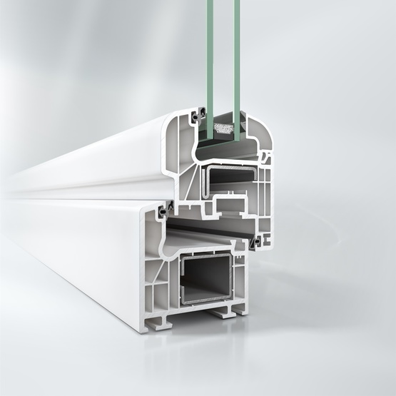

Serie practicable de 70 mm
Características:
Con un perfil de 70 mm de profundidad y 5 cámaras con dos juntas de estanqueidad.
Además de sus excelentes prestaciones térmicas, destinadas al ahorro energético, la variedad de formas y acabados de sus hojas le permite adaptarse a cualquier estilo.
Profundidad de marco: 70 mm.
Aislamiento térmico Uf: 1,3 / 1,5 W(m2.k).
Aislamiento acústico: hasta 47 dB.
Permeabilidad al aire: CLASE 4.
Estanqueidad al agua: CLASE 9A.
Resistencia a la carga del viento: CLASE C5.
Ficha técnica